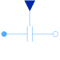
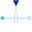

VariableCapacitorMultiphase variable capacitor |

|
Diagram
{kind=link}
Information
This information is part of the Modelica Standard Library maintained by the Modelica Association.
The linear capacitors connect the complex currents i with the complex
voltages v by v*j*ω*C = i,
using m single phase variable Capacitors.
The capacitances C are given as m input signals.
See also
VariableCapacitor, Resistor, Conductor, Capacitor, Inductor, Impedance, Admittance, Variable resistor, Variable conductor, Variable inductor Variable impedance, Variable admittance
Connectors (3)
| plug_p |
Type: PositivePlug Description: Positive quasi-static polyphase plug |
|
|---|---|---|
| plug_n |
Type: NegativePlug Description: Negative quasi-static polyphase plug |
|
| C |
Type: RealInput[m] Description: Variable capacitance |
Components (5)
| v |
Type: ComplexVoltage[m] Description: Complex voltage |
|
|---|---|---|
| i |
Type: ComplexCurrent[m] Description: Complex current |
|
| plugToPins_p |
Type: PlugToPins_p |
|
| plugToPins_n |
Type: PlugToPins_n |
|
|  | variableCapacitor |
Type: VariableCapacitor[m] |